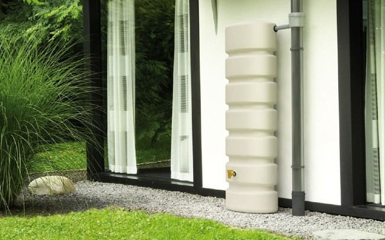
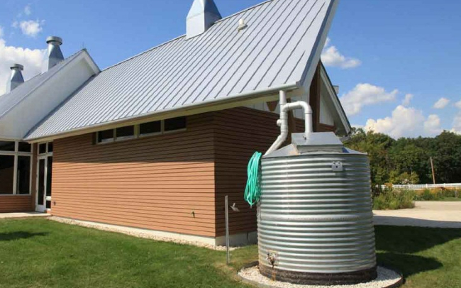
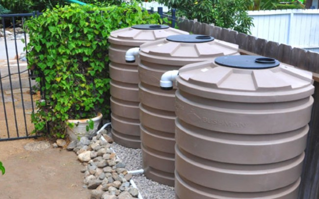

Rainwater Harvesting is emerging as an intelligent option for water supply in residential,
commercial, and agriculture applications, and it couldn't come in a
better time. No longer does one need to rely on centralized water utilities or costly drilling
and potentially undesirable well water.
Unlike commercial areas,
which are usually surrounded with buildings, some residential areas can have a lot of free
spaces between buildings. As a result,
rainwater harvesting in residential areas can have multiple forms.
Thousands of homes across the U.S. are now using rainwater harvesting as the primary source of
water, and in many cases, the only source.
Rainwater harvesting is here to stay. It's the answer for many wondering how they will have
a sustainable water supply for their home.
It may be the most influential force that helps our nation's freshwater supply in water
conservation.
This system is designed and treats the water to result a safe and healthy water. You can use it for anything like:
Rooftop rainwater harvesting is the most common rainwater harvesting technique for domestic
consumption. In residential areas,
this is often done on a small scale. It is a simple, low-cost technique that requires minimal specific
expertise or knowledge and offers many benefits.
Rainwater is collected on the roof and transported by gutters to a storage tank, where it supplies the
water at the point of consumption or can be used to
recharge a well or aquifer. It can also replenish water resources when they become scarce or of low
quality, such as brackish groundwater or contaminated
surface water during the rainy season.
However, rainwater quality can be affected by air
pollution, animal or bird droppings, insects, dirt,
and organic matter. Hence regular maintenance (cleaning, repair, etc.)
This method is the most common and one that many people are familiar with. This involves installing
a barrel at a gutter downspout to collect rainwater.
The actual barrel may be a recycled barrel or a new commercially available rain barrel.

➤ Easily implemented by anyone at any residence.
➤ Barrels are readily available in your community or at various stores & websites.
➤ Barrels don't take up much space so they can fit into any situation.
This method is a variation of a rain barrel set-up, but it involves a larger storage volume.
Essentially, the collection pipe “drys” after each rain event since it empties directly into the top
of the tank.

➤ Can store a large amount of rainwater.
➤ Less complicated system so maintenance is easier.
➤ Great for climates where rainfall happens with infrequent, larger storm events.
This method involves locating the collection pipes underground in order to connect multiple
downspouts from different gutters. The rainwater will fill the underground piping and the water will
rise in the vertical pipes until it spills into the tank. The downspouts and underground collection
piping must have water-tight connections. The elevation of the tank inlet must be below the lowest
gutter on the house.

➤ The ability to collect from your entire collection surface.
➤ The ability to collect from multiple gutters and downspouts.
➤ The tank can be located away from your house.